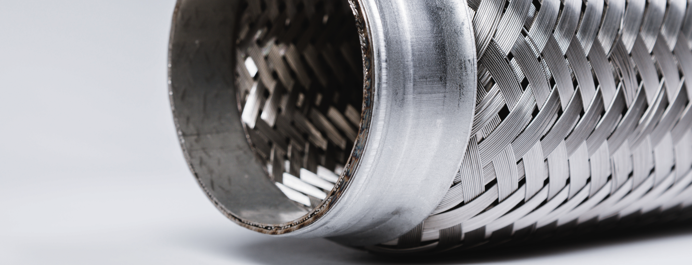

Удаление катализатора
Катализатор - это элемент выхлопной системы практически любого автомобиля, который двигается посредством сгорания смеси топлива и атмосферного воздуха.
Расположен в выпускном коллекторе или следом за ним. Необходим он для активации процесса разложения токсичных продуктов ДВС, на менее токсичные для окружающей среды газы.
Бывает двух видов: металлические или керамические соты. Соты или керамическая часть катализатора , пропитываются солями активных металлов платиновой группы и именно они вступают в химическую реакцию с окисью углерода, оксидом азота, углеводородом и прочими вредными газами, преобразуя их в безвредную воду, азот и углекислый газ. На некоторых автомобилях катализатор начинает разрушаться при 50000 км пробега и требует замены.

С одной стороны очень полезная конструкция с точки зрения экологии, но довольно дорогая, поэтому при выходе из строя, большинство автомобилистов предпочитает заменять её на пламегаситель. Пламегаситель хоть и не выполняет основные функции катализатора , но служит достойным его аналогом , который равномерно распределяет температуру и поток раскалённых газов из двигателя внутреннего сгорания , по своей рабочей площади. Для замены мы используем качественные пламегасители от проверенных поставщиков, сделанные из нержавеющей стали, с двухкамерным корпусом и диссипативной перегородкой. Так же, после удаления катализатора, мы прошьем электронный блок управления Вашего автомобиля под экологические стандарты ЕВРО 2 и по Вашему желанию сделаем чип тюнинг.Установка пламегасителя
Пламегаситель – это предварительный резонатор глушителя, используемый в качестве альтернативы катализатору в выхлопной системе автомобиля. Основная его задача – это снижение энергии и температуры выхлопных газов для оптимизации работы всех элементов системы выпуска.
Можно ли обойтись без этого элемента?
Можно, но в таком случае будет снижен ресурс выхлопной системы и появится неприятный звук работы выхлопной системы.
Одним из плюсов установки пламегасителя является увеличение мощности автомобиля, так как данный элемент оказывает меньше сопротивления для отвода выхлопных газов, в отличии от катализатора.
Также стоит отметить, что без этого элемента отвод газов будет громче, а установка пламегасителя, вместо катализатора, будет куда выгоднее. Из плюсов также можно выделить: срок службы пламегасителя и возможность заправлять свое авто более бюджетным топливом.
В своей работе мы используем качественные двухкамерные пламегасители из нержавеющей стали, с перфорированной трубой и диссипативной перегородкой
Можно ли обойтись без этого элемента?
Можно, но в таком случае будет снижен ресурс выхлопной системы и появится неприятный звук работы выхлопной системы.
Одним из плюсов установки пламегасителя является увеличение мощности автомобиля, так как данный элемент оказывает меньше сопротивления для отвода выхлопных газов, в отличии от катализатора.
Также стоит отметить, что без этого элемента отвод газов будет громче, а установка пламегасителя, вместо катализатора, будет куда выгоднее. Из плюсов также можно выделить: срок службы пламегасителя и возможность заправлять свое авто более бюджетным топливом.
В своей работе мы используем качественные двухкамерные пламегасители из нержавеющей стали, с перфорированной трубой и диссипативной перегородкой
Монтаж мини-катализатора на второй датчик кислорода
Мини-катализатор или механическая обманка второго датчика кислорода. Ставится, когда владелец автомобиля по той или иной причине не хочет прошивать ЭБУ под экологические нормы ЕВРО 2 после удаления катализатора. Необходим для корректирования сигнала второго лямбда-зонда, тем самым обманывая ЭБУ о состоянии катализатора.Обманки бывают нескольких видов:
1) Прямые или угловые, применяются в зависимости от наличия пространства у второго датчика кислорода.
2) Пустые или с мини-катализатором. Пустые обманки можно ставить на автомобили с классом экологии Евро 2-3. Обманки с мини-катализатором устанавливается на автомобили класса Евро 4-5. К недостаткам данных устройств можно отнести их относительно короткий срок службы, который составляет от 50000 до 80000 км.
Ремонт, замена прокладок и хамутов глушителя
Прокладка выхлопной системы- это деталь, торцевое уплотнение, заполняющее пространство между двумя сопряженными элементами выхлопной системы. Необходимость её заключается в герметизации соединений. Прокладки в выхлопной системе устанавливаются в соединении головки блока цилиндров и коллектора или в фланцевых соединениях. Со временем прокладки имеют свойство прогорать, как следствие нарушается герметичность соединений.
Хомут глушителя - элемент выхлопной системы отработавших газов транспортных средств с двигателями внутреннего сгорания; кольцо, пластина или деталь иной конструкции для соединения деталей выхлопной системы к кронштейнам или друг с другом.
Мы подберём нужные прокладки и хомуты для Вашего автомобиля и заменим вышедшие из строя на новые.
Хомут глушителя - элемент выхлопной системы отработавших газов транспортных средств с двигателями внутреннего сгорания; кольцо, пластина или деталь иной конструкции для соединения деталей выхлопной системы к кронштейнам или друг с другом.
Мы подберём нужные прокладки и хомуты для Вашего автомобиля и заменим вышедшие из строя на новые.
Замена гофры
Гофра глушителя - это эластичный соединительный элемент выхлопной системы в форме трубки. Предназначен для смягчения возникших вибраций во время работы двигателя внутреннего сгорания, тем самым снижая уровень нагрузки на выхлопную систему и прочие элементы автомобиля.
Гофра подвержена коррозии и прогоранию, вследствие чего требуется её замена. Мы проведём её диагностику и в случае необходимости заменим на новую качественную гофру.
Гофра подвержена коррозии и прогоранию, вследствие чего требуется её замена. Мы проведём её диагностику и в случае необходимости заменим на новую качественную гофру.
Замена фланцевого соединения
Фланцевое соединение позволяет осуществить жесткое и герметичное соединение элементов выхлопной системы. Прелесть в том, что его устройство удобно в сборе и разборе для последующего ремонта и тюнинга выхлопной системы.
Со временем фланцевые соединения подвергаются коррозии и деформации, что приводит к посторонним звукам работы выхлопной системы и нарушению герметичности соединений.
Мы проведем диагностику и в случае необходимости осуществим их замену.
Со временем фланцевые соединения подвергаются коррозии и деформации, что приводит к посторонним звукам работы выхлопной системы и нарушению герметичности соединений.
Мы проведем диагностику и в случае необходимости осуществим их замену.
Установка или замена лямбда-зонда
Лямбда зонд или датчик кислорода – это устройство, которое входит в состав выхлопной системы транспортного средства. Является обязательным элементом системы питания инжекторных автомобилей, представляющий собой датчик уровня кислорода в выхлопных газах.
Он собирает и передает необходимую информацию на электронный блок управления авто, который на ее основании регулирует обогащение топливной смеси. Нарушение штатной работы лямда-зонда приводит к аварийной работе ДВС, что повлечет за собой выход из строя других элементов и систем. При неисправности данного датчика ЭБУ начинает богатить смесь, что так же повлечет за собой увеличенный расход топлива.
В случае неисправности датчика ЭБУ сигнализирует об этом в виде ошибок P0131, P0135, P0141 и другие.
Он собирает и передает необходимую информацию на электронный блок управления авто, который на ее основании регулирует обогащение топливной смеси. Нарушение штатной работы лямда-зонда приводит к аварийной работе ДВС, что повлечет за собой выход из строя других элементов и систем. При неисправности данного датчика ЭБУ начинает богатить смесь, что так же повлечет за собой увеличенный расход топлива.
В случае неисправности датчика ЭБУ сигнализирует об этом в виде ошибок P0131, P0135, P0141 и другие.
Демпферное соединение
Демпферное соединение - представляет из себя два фланца с уплотнительным кольцом между ними, соединенные болтами с пружинами. За счет того, что это соединение подвижно происходит уменьшение вибраций и колебаний выхлопной системы. Демпферное соединение можно считать альтернативой гофры глушителя.